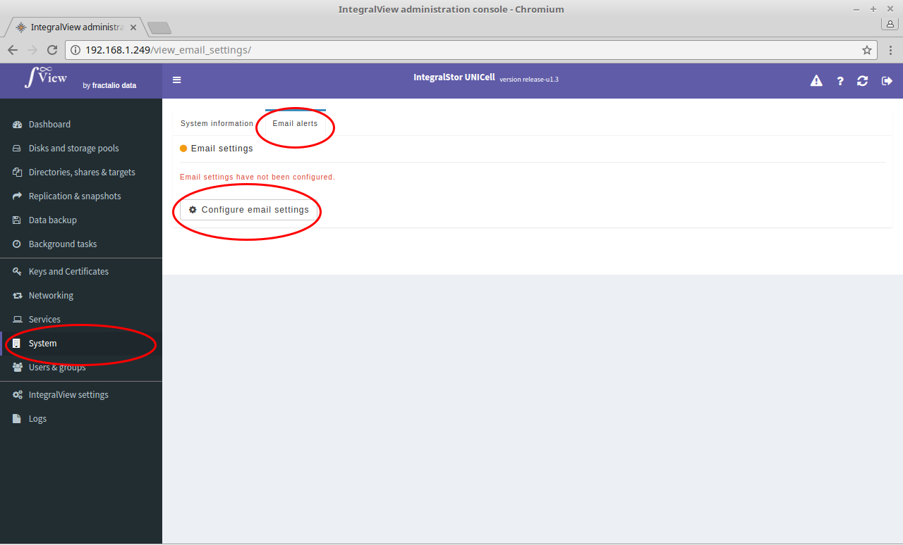

The UNICell system can be configured to send emails for all alerts to a designated set of recipients. Use this option to configure this feature. This features requires access to an SMTP server.

-
Select the “System” main menu item on the left of the screen.
-
Select the “Email alerts” sub menu tab
-
If configured, then the current configuration is displayed and can be modified by clicking on the “Modify" button at the bottom of the screen. If not, you can click on the “Configure email settings” button to configure email alerts. In either case, you will be prompted for the following information :
SMTP server : The IP address of the SMTP server.
SMTP server port : The port on which the SMTP server is listening for connections
SMTP server account username : The account name to use on the email server in order to send emails
SMTP server account password : The password of the account name specified above
Use TLS : TLS is a standards-based protocol based on Secure Sockets Layer. If your email server requires the use of TLS, please check this option.
Send email for alerts : Check this option if you want to send an email for every alert.
Email recipient list : A comma separated list of email addresses to which the email alert should be sent.
Upon saving, a system will attempt to send a test email based on the saved configuration.